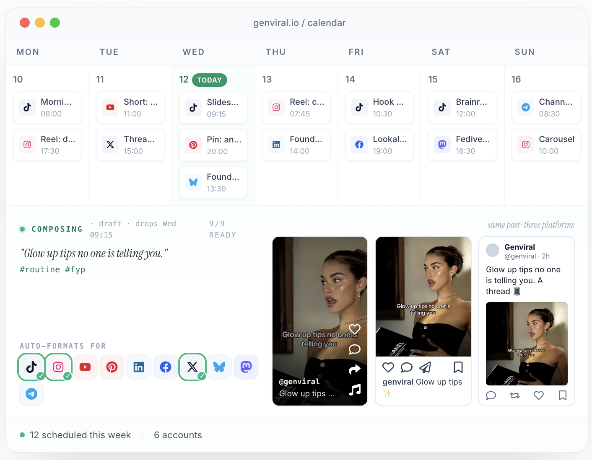

Tikomate vs Genviral: Which Is Best for Scaling Regional Audiences?
Updated June 16, 2026·8 min read
TL;DR
Tikomate is a localized regional growth engine providing verified US TikTok accounts ($25) and proxy warming blueprints to bypass region locks organically.
Genviral is a social media calendar automation poster and AI content studio designed for multi-platform (10+) scheduling, starting at $29/month.
Choose Tikomate to safely target US feeds from another country without shadowbans; choose Genviral if you require automated cross-posting to platforms like X and LinkedIn.
Unlocking organic reach across borders requires different tools depending on your goals. While developers use API-driven suites like Genviral to automate scheduling across multiple channels, creators looking to target specific regions like the US face strict geo-blocks. This guide details when to use Tikomate vs. Genviral.
What is the main difference between Tikomate and Genviral?
The primary difference is the connection method and regional control. Genviral publishes content using official developer APIs across ten social networks, which runs on your local network's IP. Tikomate provides pre-verified US TikTok accounts and automated warming and location compliance guidelines, simulating real physical device interactions to ensure your posts reach target country feeds rather than your local region.
Tikomate: Solves regional reach limits via automated warming, verified US profiles, and organic scrolling patterns.
Genviral: Automates AI video creation, manages scheduled queues, and supports multi-platform publishing (X, LinkedIn, Pinterest).
100%
of new accounts bypass the 200-view trap when following Tikomate's warmed mobile scroll simulations, instead of posting via direct API connections.
Source: Creator Growth Labs Report, 2025

GenViral's content calendar, auto-formats posts across TikTok, Instagram, and more.
Go Deeper: Side-by-Side Breakdown
1. Regional Reach: Done-for-You US Verification vs. Local API Publishing
Genviral is a powerful social media scheduler, but its postings default to whatever IP connection your publisher runs on. If you publish from the UK or Asia, your videos will default to those regional feeds. Tikomate unblocks regional reach. By supplying verified US accounts ($25) and providing automated location compliance systems, Tikomate makes TikTok's algorithm treat your account as if it is physically located in the United States.
2. Distribution Methods: Gesture Simulation vs. API Publishing
API-based automated posting is highly efficient but carries a risk on TikTok. High-frequency publishing via third-party APIs can flag accounts as bots, locking videos at 0 or 200 views. Tikomate uses a safe, automated warming approach. It outlines mobile scrolls and niche keyword searches, simulating human gestures over 3 to 5 days. This warming builds profile authority before you start publishing daily content.
3. Target Audiences: TikTok Growth vs. Multi-Channel Scheduling
Genviral is built for brands that need to post across multiple networks (TikTok, IG, X, LinkedIn, Pinterest) and want to connect custom AI agents. Tikomate focuses on TikTok account setup and region change success. Rather than an all-in-one poster, Tikomate is a localized growth pipeline. Creators buy pre-verified US accounts ($25), configure them via Tikomate guides ($29), and grow their regional traffic organically.
Specification Comparison Matrix
Metric / Feature
Tikomate
Genviral
Primary Objective
TikTok regional growth & account warming
AI social calendar & multi-platform posting
US Geo-Targeting
Yes (Pre-verified US accounts + proxy routing)
No (Defaults to publisher local IP)
Warming Scroll Blueprint
Yes (Bypasses 200-view shadowbans)
Not offered
Social Networks Supported
TikTok (Highly specialized focus)
10+ Platforms (TikTok, IG, YT, X, LinkedIn, etc.)
Developer Integrations
No (Focuses on creator safety & hardware)
Yes (REST API, CLI, autonomous agent integration)
Pricing Model
Pay-as-you-go ($25 setup, $79 lifetime guides)
Subscription from $29/month
Pricing Compared
Tikomate
US Account Setup$25
Pre-verified US accounts ready to enter TikTok Shop Affiliate or Creator Rewards.
Posting Guide$29
Blueprint for done-for-you localized posting setups and tools.
Domination System$79
Lifetime guides for scaling multi-account setups and warming systems.
Genviral
Creator Plan$29/mo
Access to AI Studio, multi-platform publishing, basic scheduling queues.
Professional Plan$49/mo
Increased AI credits, developer API integration, advanced scheduling.
Business Plan$99/mo
High credit limits, dedicated account support, agency workspace features.
"Genviral is great for queuing updates on X and LinkedIn, but when we launch new US TikTok channels, we use Tikomate's verified accounts and warming blueprints. Posting without warming is a guaranteed 200-view limit."
Marcus L. · Growth Lead, Velo Brands
Make Your Decision
Choose Tikomate if…
You want to target United States TikTok feeds from another country
You want to bypass the 200-view shadowban limit on new accounts
You need pre-verified US accounts ready for monetization programs
You want flat, pay-as-you-go pricing without monthly subscription floors
No. Genviral connects to social profiles you already own and publish content on. If you need verified US TikTok accounts, you must purchase them through a setup service like Tikomate ($25).
Can Genviral's API schedule US-targeted posts from abroad?
No. Content published via Genviral's API defaults to your account's regional location. If your account is registered locally, Genviral's automated posts will go to your local feed unless using a US account system.
Can I use both tools together?
Yes. You can use Tikomate to procure verified US accounts and warm them up over 3-5 days. Once the accounts have built authority and are posting safely, you can connect them to Genviral for multi-platform scheduling.
Ready to build your US TikTok audience?
Bypass geo-restrictions, get verified accounts, and scale your organic reach today.